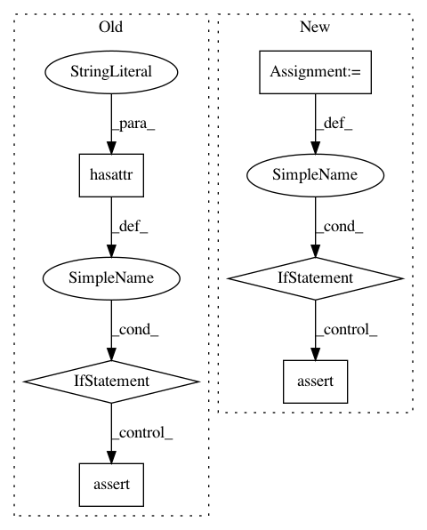

b95fcf7f52aca8ad0b1afb3cfc64c8eed534fafe,tests/keras/backend/backend_test.py,,check_single_tensor_operation,#Any#Any#Any#,43
Before Change
**kwargs)([val])[0]
else:
z = k.eval(getattr(k, function_name)(k.variable(val), **kwargs))
if hasattr(z, "_keras_shape"):
assert z._keras_shape == z.shape
z_list += [z]
for (z1, z2) in zip(z_list[1:], z_list[:-1]):
assert z1.shape == z2.shape
After Change
def check_single_tensor_operation(function_name, x_shape_or_val, backend_list, **kwargs):
shape_or_val = kwargs.pop("shape_or_val", True)
assert_value_equality = kwargs.pop("assert_value_equality", True)
assert_value_with_ref = kwargs.pop("assert_value_with_ref", None)
cntk_dynamicity = kwargs.pop("cntk_dynamicity", False)
if shape_or_val:
x_shape, x_val = parse_shape_or_val(x_shape_or_val)
z_list = []
for k in backend_list:
if shape_or_val:
if (k == KC) & (cntk_dynamicity):
z = cntk_func_single_tensor(function_name, x_shape,
**kwargs)([x_val])[0]
else:
z = k.eval(getattr(k, function_name)(k.variable(x_val), **kwargs))
else:
z = k.eval(getattr(k, function_name)(x_shape_or_val, **kwargs))
z_list += [z]
if assert_value_with_ref is not None:
assert_list_with_ref(z_list, assert_value_with_ref)
else:
assert_list_pairwise(z_list, allclose=assert_value_equality)
assert_list_keras_shape(z_list)
def check_two_tensor_operation(function_name, x_shape_or_val,
In pattern: SUPERPATTERN
Frequency: 3
Non-data size: 6
Instances
Project Name: keras-team/keras
Commit Name: b95fcf7f52aca8ad0b1afb3cfc64c8eed534fafe
Time: 2017-07-29
Author: me@taehoonlee.com
File Name: tests/keras/backend/backend_test.py
Class Name:
Method Name: check_single_tensor_operation
Project Name: keras-team/keras
Commit Name: 94dbc3042f5a85b399f5ce2859d4e8fbafd235b9
Time: 2017-07-06
Author: me@taehoonlee.com
File Name: tests/keras/backend/backend_test.py
Class Name:
Method Name: check_two_tensor_operation
Project Name: keras-team/keras
Commit Name: 94dbc3042f5a85b399f5ce2859d4e8fbafd235b9
Time: 2017-07-06
Author: me@taehoonlee.com
File Name: tests/keras/backend/backend_test.py
Class Name:
Method Name: check_single_tensor_operation